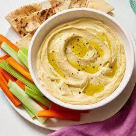

Hummus

Description
Hummus also spelled hommus or houmous, is a dip of
Arab origin, spread, or savory dish made from cooked
, mashed chickpeas blended with tahini, lemon juice,
and garlic. The standard garnish in the Middle
East includes olive oil, a few whole chickpeas,
parsley, and paprika.
Popular in Middle Eastern cuisine, it is usually
eaten as a dip, with pita bread. In the West, it
is now produced industrially, and is often
served as a snack or appetizer with crackers.
Ingredients
- 1 (15 ounce) can garbanzo beans, drained,
liquid reserved
- 1 tablespoon lemon juice
- 1 tablespoon olive oil
- 1 clove garlic, crushed
- ½ teaspoon ground cumin
- ½ teaspoon salt
- 2 drops sesame oil, or to taste (Optional)
Steps
- Blend garbanzo beans, lemon juice, olive oil,
garlic, cumin, salt, and sesame oil in a food
processor; stream reserved bean liquid into the
mixture as it blends until desired consistency
is achieved.
- I usually end up using about half of the bean
liquid, so be sure to reserve it! Also, I like
to let the flavors blend for several hours or
overnight before serving this.